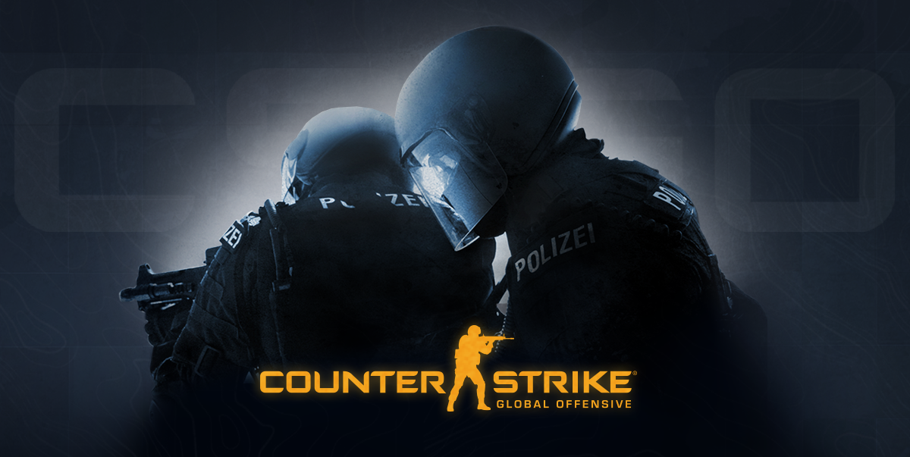
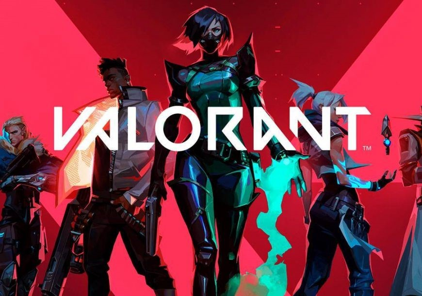
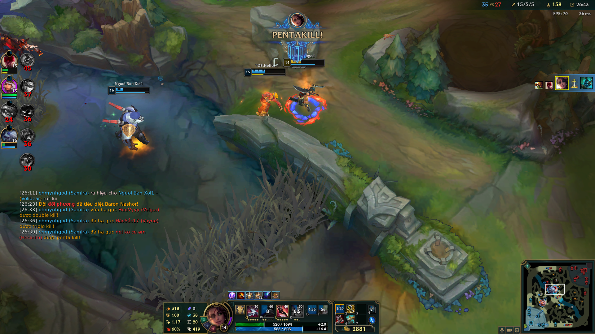
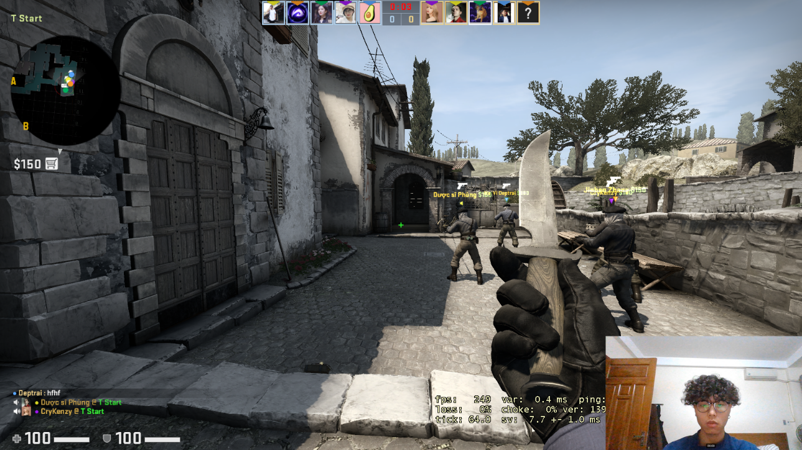

Ming Phạm
Hai vị vua của làng FPS
Nếu bạn là fan của các tựa game FPS (First-Person Shooter), có lẽ bạn sẽ không xa lạ gì với hai cái tên mà mình nhắc đến ở phần tiêu đề. CS:GO từ lâu đã là ông hoàng của dòng game FPS nói chung, là người bạn thân của bao thế hệ từ 8x, 9x và 10x.
VALORANT tuy là một tựa game trẻ hơn và mới được ra mắt gần đây, vậy nhưng trong một năm trở lại đây nó đã trở thành một hiện tượng và mang lại lợi nhuận khổng lồ cho nhà phát triển. Trong bài viết này, mình cho các bạn thấy một cái nhìn tổng thể về CS:GO và VALORANT dựa trên góc nhìn của mình – người đã tiếp xúc với cả hai tựa game kể trên và có lẽ sẽ giúp các bạn chọn được xem mình nên chơi trò nào.
Nếu bạn là một người không quen với cách di chuyển của các dòng game góc nhất thứ nhất nói chung, khả năng cao bạn sẽ bị chóng mặt khi chơi FPS, vậy nên mình khuyên những người này không nên trải nghiệm cả CS:GO hay VALORANT mà nên tìm cho mình những tựa game MOBA để chơi. Còn với những bạn không có vấn đề gì, thì chúng ta sẽ tìm hiểu tại sao lại chỉ nên chơi một trong hai game kể trên nhé.
Bạn nên chơi những game MOBA nếu chóng mặt khi chơi FPS
Mình sẽ nói về sự giống nhau của hai tựa game này trước. Đầu tiên, cả hai đều thuộc dòng game FPS, vì vậy cách chơi của chúng là giống nhau. Cả hai đều là game 5 đấu 5, sẽ phân thành 2 phe công và thủ và giữa game 2 đội sẽ đổi phe. Để chiến thắng trò chơi ta cần đạt được số round thắng nhất định và cần tính toán chiến lược, chi tiêu sao cho hợp lí nhất. Hai tựa game cũng có những khẩu sung tương tự nhau, ví dụ như AK47 và VANDAL; M4A1 và PHANTOM hay súng ngắm AWP và OPERATOR.
1. CS:GO ( Counter Strike: Global Offensive)
CS:GO là một tựa game được phát triển bởi Valve, ra mắt vào năm 2012 và lập tức tạo được niềm tin nơi người chơi. Thời đó các game FPS nói chung thực sự chưa có chỗ đứng và chỉ khi CS:GO ra mắt, thế giới game mới phân chia thành hai phe: game MOBA và game FPS. CS:GO đã đặt nền móng cho rất nhiều game FPS ra đời như APEX LEGEND, CALL OF DUTY,… tuy nhiên không game nào có được tiếng vang và cộng đồng người hâm mộ lớn như tiền bối của chúng. Có thể nói CS:GO là ông hoàng của FPS lúc bấy giờ.
Mỗi người chơi trong CS:GO, đều cần các khẩu súng hợp lí với round đấu; các quả bom cần thiết và phải học thuộc cách ném những quả bom đó sao cho mang lại hiệu quả cao nhất. Có thể nói, mỗi thành viên trong đội hình có vai trò như nhau. Một việc khác cần làm khi chơi CS:GO đó là bạn cần phải tính toán được lượng tiền mà đối thủ đang có từ đó đưa ra những quyết định chi tiêu hợp lí nhất cho toàn đội. Chính vì những điều trên, bên cạnh khả năng aim tốt thì bạn cũng cần có một bộ óc nhanh nhạy nếu muốn chơi tốt tựa game này.
Một clip highlight của mình
2. VALORANT
VALORANT được ra mắt vào tháng 6 năm 2020 bởi Riot Games, tức là mới chỉ hơn 1 năm kể từ khi tựa game này ra mắt. Tuy khi mới ra mắt, VALORANT nhận được rất nhiều chỉ trích từ những người hâm mộ CS:GO do cách chơi khá giống nếu không muốn nói là gần như y hệt, thế nhưng VALORANT đang ngày càng khẳng định được chỗ đứng của mình với người đàn anh. Rất nhiều những game thủ chuyên nghiệp kì cựu cũng như người chơi lâu năm của CS:GO đã chuyển sang VALORANT và nhà phát hành cũng đang rất tích cực tổ chức các giải đấu để mang tựa game này đến với nhiều người hơn.
Tenz – cựu game thủ CSGO
Nói về ưu điểm thì VALORANT thực sự dễ chơi và thân thiện hơn CS:GO rất nhiều. Mỗi nhân vật (hay còn gọi là Agent) trong VALORANT đều có chức năng và nhiệm vụ riêng, và sử dụng các chiêu thức của họ cũng dễ hơn việc sử dụng các quả bom trong CS:GO rất nhiều. Một điều nữa là VALORANT cho bạn biết được lượng tiền đang có của đối thủ là bao nhiêu, tức là bạn sẽ không còn cần đau đầu để tính toán chi tiêu mà dành thời gian đó để set-up cho việc tấn công hay phòng thủ. Một điểm cộng nữa là đồ họa của VALORANT mang phong cách hoạt hình và rõ ràng phong cách này sẽ hướng đến được nhiều đối tượng hơn, từ trẻ em đến người trưởng thành. Có lẽ chính vì vậy mà danh tiếng cũng như số lượng người chơi lại tăng nhanh đến như vậy.
Nếu bạn là một người thích thử thách và yêu những thứ hoài niệm, hãy chơi CS:GO. Còn nếu bạn mong muốn một thứ mang tính giải trí cao hơn và ít căng thẳng hơn, VALORANT là sự lựa chọn tuyệt vời dành cho bạn.
Hi vọng bài viết này đã mang lại cho bạn một cái nhìn rõ ràng hơn về hai tựa game có thể nói là những ông lớn của làng FPS cũng như gợi ý cho bạn tựa game phù hợp nhất với mình!